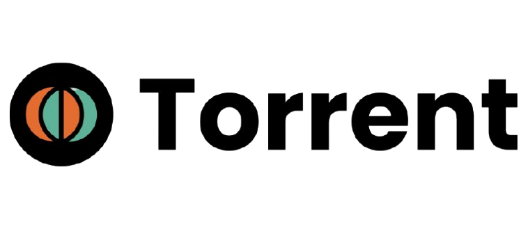

← → to change slide · F fullscreen

Software project proposal
A centralized platform that tracks BMA software procurement (TOR) opportunities and proactively matches them to qualified vendors — a reversed job board for government software procurement.

Introduction
The BMA Software Procurement Platform is a centralized system that tracks software-related procurement opportunities (TORs) issued under the Bangkok Metropolitan Administration and proactively notifies qualified software vendors, studios, freelancers, and agencies about relevant opportunities.
Instead of vendors searching for work across dozens of scattered portals, TORRENT surfaces and pushes relevant government software TORs directly to them, from draft stage through publication.
02